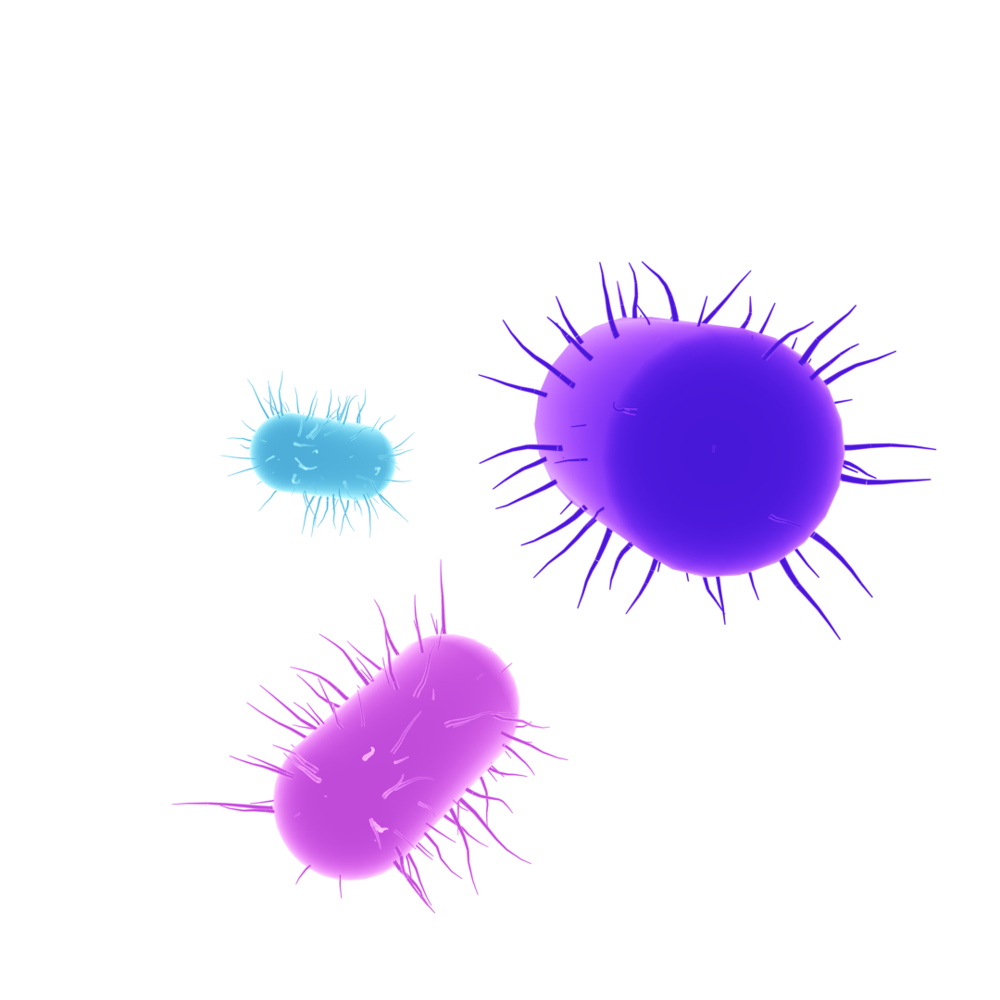
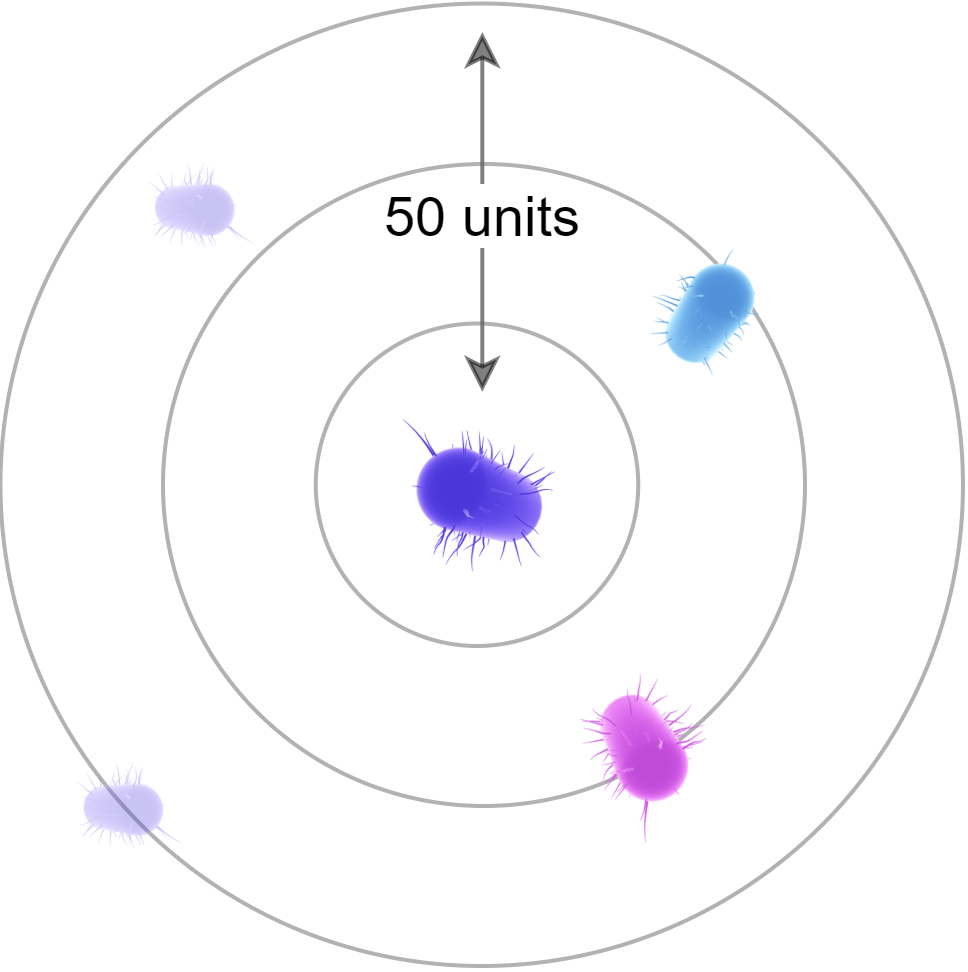
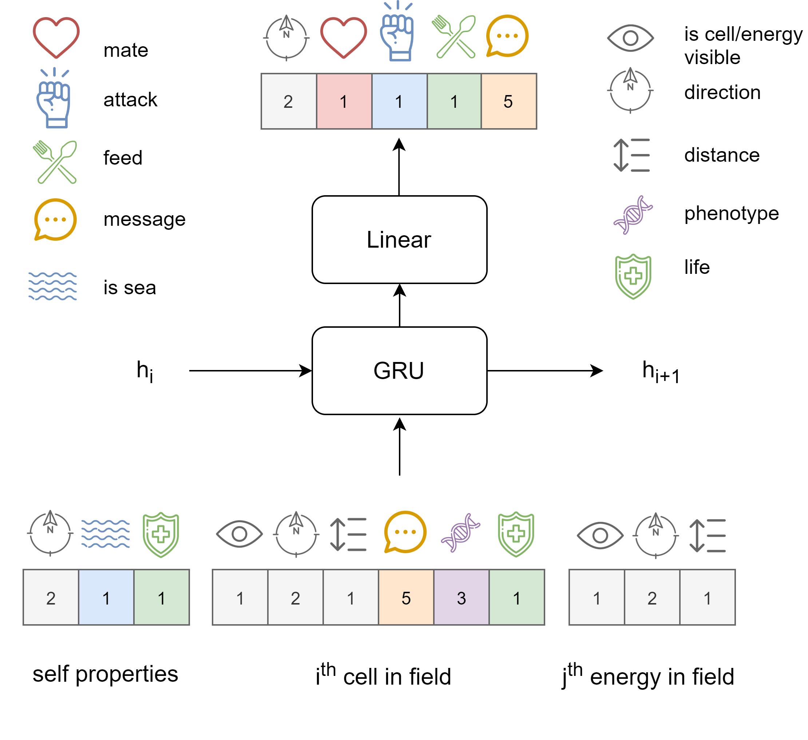
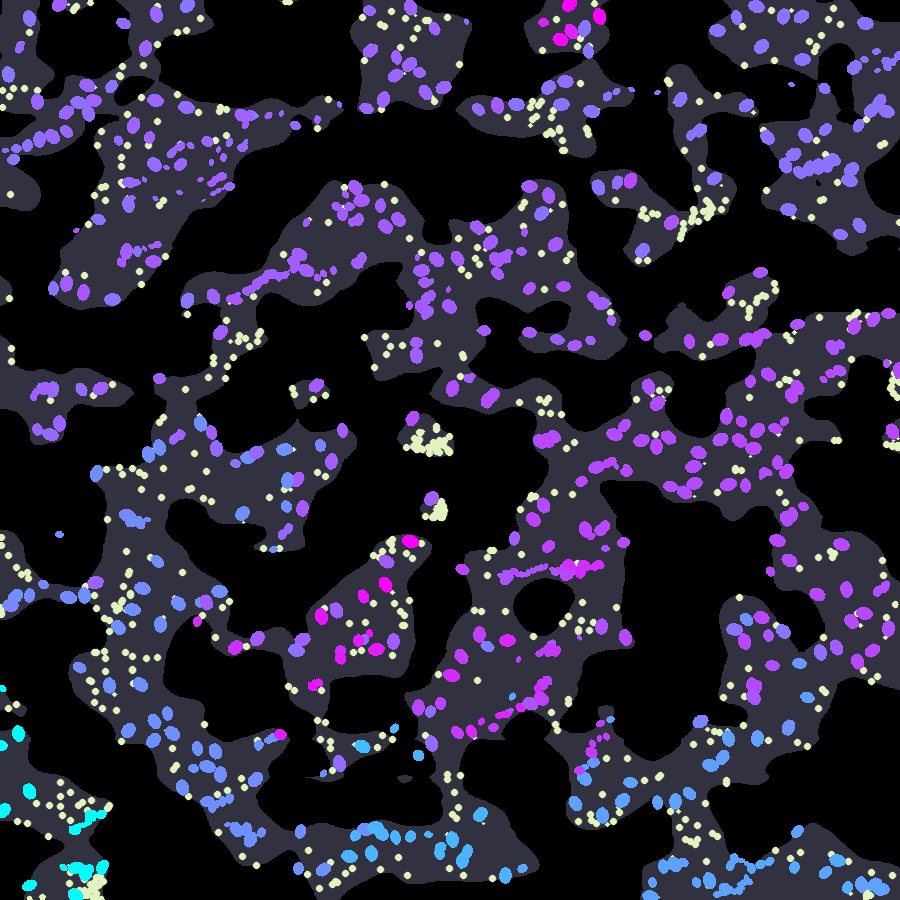
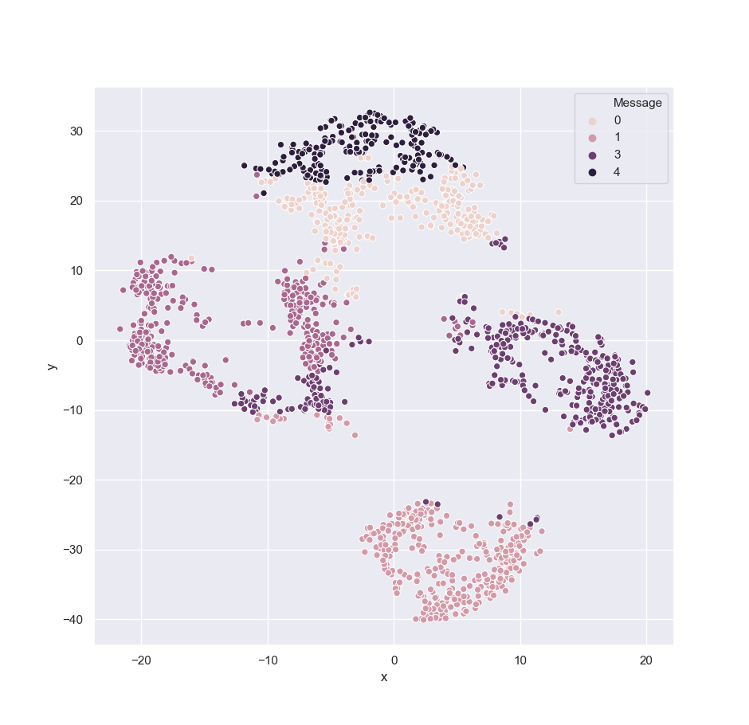

Emergent Behaviors from a Large-Scale Life Simulation
We simulate an environment with up to 2,000 agents, each modelled by a separate neural network.
We allow the agents to communicate via direct (signals and messages) and indirect (phenotype viewing) means.
From a complete random generation of weights early in the simulation, basic maneuvering skills emerge
and later, complex behaviors and iteractions evolve.
We collect and explore some of the emergent behaviors from our simulations.
Terrain
The terrain is made of land (gray) and sea (blue).
The land areas are randomly generated using Perlin
Noise.
The energy sources can only be found on land.
In addition, the sea area is harmful to the living cells.
The creation of a non-homogenous environment with separate territories would encourage more
diverse
behaviors and speciation, as we will later see.
A 1,000 x 1,000 units world. Every simulation may generate a different
terrain.
Energy Source
An energy source is a circular object with radius proportional to its energy level.
When a cell touches it, it may choose to consume its energy, thereby decreasing its size.
Energy sources are scattered
uniformly on land.
Cell
A cell is a living creature, capable of moving, feeding and reproducing.
In addition, a cell is capable of communicating with other cells on which we elaborate later.
A cell's size signifies the amount of energy that it has. A cell with a higher energy level can survive longer
without food and may inflict more damage on other cells.
Above a certain size threshold, a cell may also have the ability to reproduce via sexual reproduction.
We define a cell phenotype as a portion of its genome, or more
technically, a fixed area from the weights of its neural network.
The cell colors in our illustrations are derived from their phenotypes: We reduce the dimensionality of the
phenotypes to 3-dimensional vectors and scale each axis to a [0, 255] range, denoting RGB colors.

Cells with varying phenotypes and energy levels.
Model
At the heart of each cell is a gated recursive unit, or GRU, followed by a feed forward layer.
Its output is a set of independent actions on other cells or on the environment:
A vector of acceleration, boolean flags indicating whether it wants to mate,
attack and feed, and a free message that it wishes to
broadcast to other, nearby cells.
Its input is more involved and encapsulates information from the cell's current state, as well as the state of
nearby cells and energy sources.
The cells have a limited receptive range: They cannot detect other cells and energy sources beyond this
range.
In addition, they have a limited receptive field. That is, they can only detect k cells/energy
sources at once and always prefer to choose the closest.

A cell's (purple) receptive range of 50 units and receptive
field of 2 cells maximum. Cells outside the receptive field (translucent) are invisible to the cell in the
center.
In summary, the cell input includes: the cell current acceleration vector, whether it is in
sea or not, and its current energy level.
Then, for each other cell i within its receptive range and field, a valid flag
indicating whether there is indeed a cell within range (otherwise, all attributes concerning the ith
cell are trash and should be neglected),
the direction to the ith cell, the distance from it, the
message coming from that cell, its phenotype and its energy
level.
Valid flag: Since the dimensionality of the input must remain fixed for the neural network,
fields must be populated even when data is absent.
The valid flag allows the cell to distinguish between input that depicts an
actual entity in-sight and input that should be ignored.
Likewise, for each energy source j within its receptive range and field, there is a flag indicating
whether the data is valid (i.e., the energy source is in range),
the direction and distance to that energy source.
Increasing the receptvie range and field increases the complexity of the observation space by a great amount.
Therefore, in our experiments we limit the receptive field to 2 cells and 2 energy sources (two separate
receptive
fields).
The following diagram summarizes a single cell's neural network, its input and output, in a
single time step.

A cell's model in time step i+1. The dimensions allocated
to each feature are
designated in the respective boxes. (GRU's hidden dim = 32).
In many reinforcement learning problems the actor uses a Markovian decision process, where a single state can be
used to model all future environment interactions.
In such situations, past states are useless as they don't tell us anymore than what the current state
does.
Since in our large-scale multi-agent simulation, environment is only partially known to each cell and changes
very often as cells enter and
leave each other's receptive fields,
neglecting knowledge from previous states would result in
spasmodic movement by the agents.
Rather, we find that using a previous hidden state aids the cells adapt a coherent movement and behavior, and
allows a
cell to
preserve intention
from one time step to the next.
Feeding
In order for a cell to feed, it must be within touching radius of the energy source and light up
its feed flag at the same time.
A cut-off threshold is used to detect whether a flag in a cell output (such as feed, attack or mate) is lit or
not
Since each cell has a maximum size limit, it may choose not to consume a source if its own energy is at
maximum,
and spare it for later use or for others.
A cell feeding
Attacking
A cell has the ability to inflict damage upon other cells by lighting its attack flag when
touching them. An attack event causes the victim to lose a great amount of energy, yet it also requires the
attacker
to spend some energy.
In a fight to the death, the cell with the higher energy level is more likely to survive as it has
more energy to spend on attacks and more energy to withstand an attack. As a result, in our observations, smaller
cells tend to avoid larger cells.
Reproduction
The cells employ a sexual reproduction as their evolutionary strategy.
When the sum of two cells' energy levels passes a certain threshold, they are allowed to mate.
However, for mating to take place, the two cells must also touch and light their mating flags at
the same time.
A single mating event results in the production of a single offspring whose neural network weights are an
average of the weights of its two parents, with the addition of noise.
Thus, the resulting offspring's traits and behaviors are somewhat similar to its parents', but may also exhibit
novel
behaviors due to "mutations".
In pratice, cells often mate with the same partner more than once in a short period of time, which results in
numerous offsprings.
Mating of two cells (blue and purple). The cells mate until the purple cell
loses it's energy completely and consequently, dies.
The children phenotypes are a
noisy average of their two parents.
Cells also lose energy following a reproduction, which enforces a limit on the number of matings they can do in a
single episode.
Simulation
In each time step, the energy level of each cell is decreased by a constant so that cells must pro-actively
acquire more energy in order to survive and cannot remain idle.
When accelerating, cells also lose more energy that is proportional to their acceleration.
Thus, cells must use their energy resource wisely, and only predetermined actions are encouraged.
A world is defined by an N x N grid, where N is initially small and increases with the cells
average generation.
The total energy in the world remains constant and is proportional to N.
The sum of all energy sources together with the sum of all cell energies, cannot exceed that level.
Having a constant energy creates a tradeoff between the number of creatures in the world, and their level of
sophistication. For
example, in the initial phases, the world contains relatively more cells compared to later phases,
however, they are also much smaller as they are inapt in acquiring food.
In each time step, we calculate the amount of new offspring that need to be added to the world (i.e., as a result
of mating events).
If this level reaches below the world capacity, we fill the remaining capacity by adding cells at random
positions, having randomly initialized
weights.
Otherwise, if the world is at a maximum capacity, we evict cells with the lowest energy levels, making room for
the
new
offsprings.
However, when a cell's energy level passes a certain threshold, it cannot be evicted.
In the extreme case when the world is at a maximum capacity and all cells are above that threshold, no new
offpsrings can be made.
The total mass of the energy resources is also bound by the world capacity limit.
World Expansion
We denote the generation of each cell as its depth in the lineage tree where the root ancestor
was randomly generated. Thus, each randomly generated cell is a 1st generation, it's first offspring
is 2nd generation, etc...
The generation can attest to the quality of a cell such that greater generations are expected to be more
sophisticated.
When the average generation of all cells reach a certain level, the world is expanded and its energy constant is
increased proportionally.
Consequently, more cells and energy sources can be generated, and cells have a larger inhabitant.
After an expansion, the threshold generation for the next expansion is updated accordingly.
A series of world expansions.
In our simulations, expansions are separated by a few thousands generations (i.e, 3k generations between two
consecutive expansions). We begin with a world of size 50 units and progress
to a maximum world of size 1,500 units, which contains 2,000 cells.
The world expansion is dual-purpose in this case: First, it lets us run more simulation steps in the early phases
of training, in a shorter period
of time since the world is smaller and less entities are involved in the physics computation.
Second, it establishes a sort-of curiculum-learning, where cells initially master basic movement and later exhibit
more elaborate behavior as the environment becomes larger and interactions diversify.
As we will soon see, in the early phases, cells focus is on mastering basic movement and maneuvering in order to
reach energy
sources, and later phases include speciation and communication with other cells.
Evolution of Motion
In the early stages, the cell motor ability transitions from completely random jiterrings to a controlled,
goal-directed
movement.
Early simulation phases. Cells exhibit random movement and
therefore, fail to gain size and survive (Median generation: 1).
Later simulation phases. Cells master movement and are able
to acquire food more successfully (Median generation: 1k).
Since a cell is penalized in direct relationship to its acceleration, a cell would normally
move slowly, unless it has a good reason not to, such as when
competing with other cells for the same energy source.
A cell snatches away an energy source from a competing cell.
To illustrate more clearly how the motor ability of the cells evolve, we conduct a race between cells separated by
a few hundred generations each.
Evidently, cells become faster as they evolve.
A race between cells from three separate generations: 200
(white), 400 (pink) and 600 (blue). The more advanced the generation, the faster the cell is.
Speciation
The creation of inhabitable (land) and uninhabitable (sea) areas, make it harder for the cells to emmigrate from one
place to another. This allows cells to develop separate
genetic pools, each undergoing further evolutionary steps somewhat isolated from the other.
A snapshot from a late phase in a simulation shows how separate phenotypes (hence, genes) are confined to separate
territories.

A 1400 x 1400 world snapshot from generation 15k. Different genes are confined to different regions. Also,
cells seem to inhabit only land. (Energy sources
are removed for ease of visualization)
Since reproduction requires proximity, this correlation between genes and locality is expected. However, another
contributor is the similar behavior that
like-cells exhibit.
In this illustration, a distinct cell (blue) segregates away from a group of five closely related cells (pink),
even
when initially positioned in the exact same spot and having the exact same initial observation as those five
cells.
Species segregation. The blue cell segregates away from the five
pink cells even though starting at the same initial position.
Evolution of Communication
Perhaps the most interesting aspect of the simulation is how cells learn to communicate.
We recall that cells have four type of signals to communicate with: mate, attack, feed and a free message.
To illustrate the variability in communication, we perform a clustering of the cell free messages collected from a
single time step, and reduce them using a PCA
followed by
T-SNE.

Clustering of cell messages from a single time-step. (Median generation = 15k.
We used a silhouette score to find the best number of clusters under KMeans. Using
PCA followed by T-SNE; perplexity=70, for visualization).
An obvious next step would have been to plug each centroid from the message clusters
into the cells and observe their behaviors in order to learn the meaning of those messages.
However, since messages are scenario and species dependent, such a task is not so straight-forward.
Instead, we show two simpler examples, where we force a cell to broadcast two signals: attack and feed.
In each of the following two examples, we pin the cell in the middle (pink) in-place and force it to broadcast a
message of
our choice. The second cell (blue)
is free to move and broadcast whatever message it chooses. The two examples involve the exact same cells, and the
exact same initial settings. The only thing that differs is the message that the pink cell broadcasts.
In the following illustration, we force the pink cell to broadcast an attack signal, making the blue cell
engulf it in reach for the energy source.
The cell rounds the hostile cell in order to reach the energy
source.
In the next example, the pink cell broadcasts a feed signal, which
confuses the blue cell, making it think that there is
another energy source where the pink cell is at.
The blue cell is lured by the feeding signal coming from the pink
cell.
Conclusion
Evolutionary Strategy has been recently shown to
compete
with standard reinforcement learning algorithms on
a set of Atari games having single or few agents. This often involves the collection of separate game trajectories
over multiple processes, by agents residing in separate, isolated environments.
In our simulation on the other hand, all agents live in the same world, which increases variability and diversity
of
interactions.
We use evolutionary strategy to train the models but delegate the decision on reproduction to the involved
individuals themselves. Thus, the reproduction process itself is subject to evolution.
We have obtained a variety of rudimentary forms of communication by simulating the process of natural selection in
a large-scale, multi-agent environment.
An extension of this work may choose to employ a variety of other models as the cell state-machine. In
particular,
it would be interesting
to explore the addition of attention layers on top of our neural network architecture.
A further study may wish to integrate more complex tasks in the environment: for instance, such that require
cooperation and team-work by the agents.
Technical details
Simulations were done on a single thread, single CPU (Intel i7). Reaching a 20k generation took approximately 30 hours.
(GPU is also supported however, performs much slower).